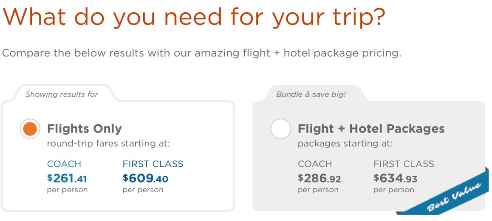
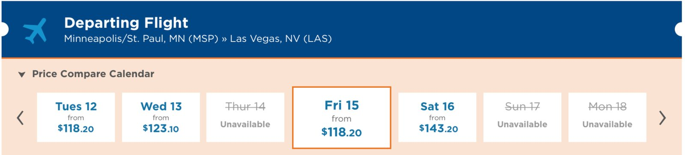
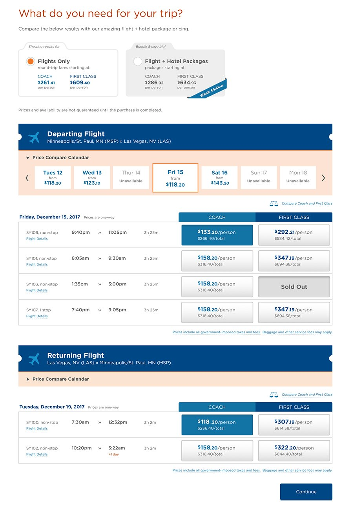

Work / Case study
Sun Country Airlines · E-commerce · Responsive IARe-Architecting the Search Page
A booking engine that sells two products at once is a great value proposition and a brutal interface problem. This is how we made it legible — down to 320px.

Two products, one query
Sun Country operates a hybrid booking engine that evaluates and presents both Flight-Only and Flight + Hotel Package options concurrently during a single round-trip query. The dynamic comparison model is a genuine differentiator — users can toggle prices without re-initiating the search — but it introduced significant cognitive load, pricing ambiguity and dense UI, especially on mobile.
As Lead Designer I redesigned the core Search Results Page architecture: simplifying dynamic bundle calculations, modernizing date-comparison interactions, and establishing a fully responsive UI system optimized down to 320px screens.
Key outcomes
The strategic challenge
Exposing simultaneous flight and package data creates a balancing act across three dimensions:
- Information density & comparison — displaying two distinct product types with overlapping attributes without cluttering the screen or confusing the customer
- Dynamic pricing transparency — bundles obscure individual item costs, so the system had to communicate price differences clearly as selections changed across legs and room tiers
- Cross-device scale — parity for high-density transactional data from 320px phones to large desktop displays
Discovery & research operations
-
Heuristic evaluations & competitor audits
Benchmarked airlines and online travel agencies with a focus on cabin class treatments, mobile layout adaptations and date-change mechanics.
-
Moderated usability & concept testing
Surfaced the central pain point: users repeatedly struggled to recognize whether they were currently building a standalone flight itinerary or a bundled package.
-
Quantitative feedback loops
Analyzed customer feedback channels to target specific drop-off patterns in the legacy selection flow.
Architectural & interaction solutions
01 · Dual-path toggle architecture
High-visibility segmented control tabs at the top of the flow establish instant clarity on landing. Explicit state indicators — including radio-button iconography inside the tabbed cards — visually reinforce selection state and prevent accidental cross-shopping confusion.

02 · Sequential decision scaffolding
Combining departing flights, returning flights and multi-tier hotel selection into a single viewport risks overwhelming users. Structural headers dynamically summarize route and duration context while chunking the decision into steps: Departing → Returning → Package options.
03 · Inline fare comparison — the Price Compare Calendar
Instead of forcing a full search reload to check adjacent travel dates, I architected an expandable, inline fare-comparison calendar ribbon. Selecting a new date dynamically updates only the affected result modules, keeping the user anchored in their current session context.

04 · Explicit micro-interactions & group pricing
- Selection mechanics — legacy radio buttons replaced with dedicated call-to-action selection buttons displaying both per-person costs and calculated group totals
- Conditional funnel advancement — dynamic CTAs based on context: flight-only shoppers routed directly to checkout via a sticky bottom bar, package shoppers routed to hotel room configuration

Cross-functional delivery & distributed execution
Design system handoff: robust component specifications, responsive design patterns and interactive micro-states documented in Sketch.
Remote engineering collaboration: partnered closely with remote engineering teams via Sketch Cloud and structured design specs to ensure high-fidelity implementation across desktop and mobile breakpoints.
What I'd carry forward
Density isn't the enemy — ambiguity is. Every point of conversion we gained came from making state explicit, not from removing information.